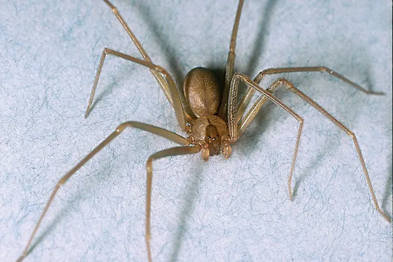
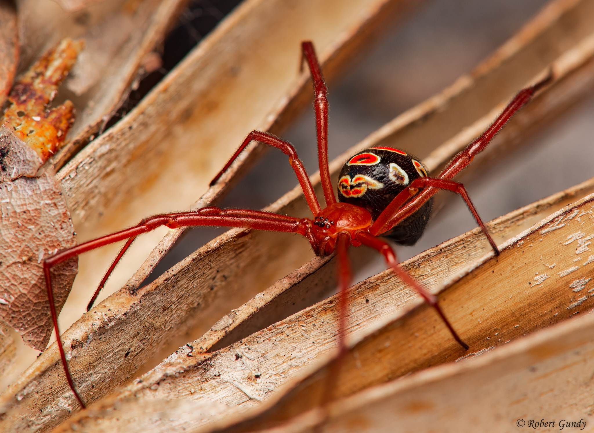
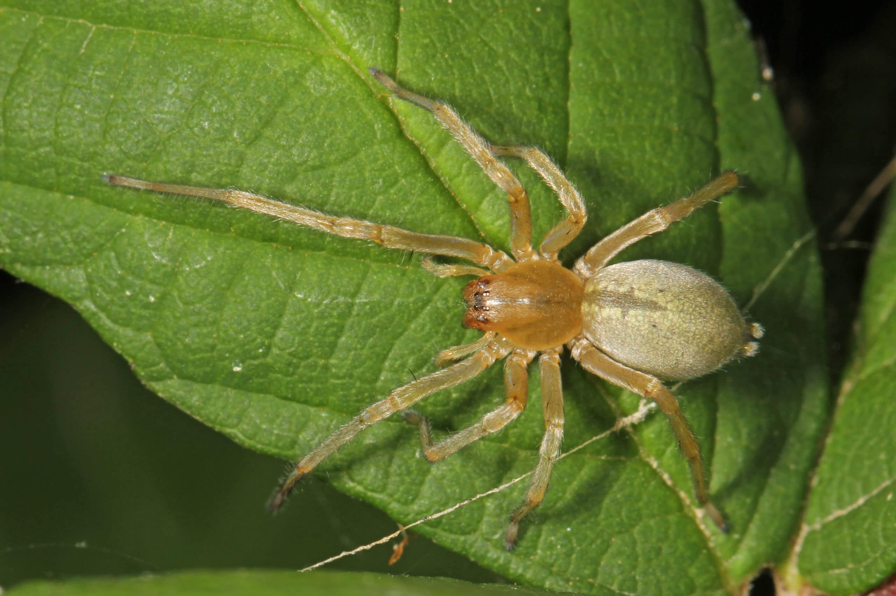

Notorious Species

Black Widow
The black widow is known for its potent neurotoxic venom and distinctive red hourglass marking.

Brown Recluse
Famous for its necrotic bite, the brown recluse prefers dark, undisturbed environments.

Red Widow
A rare species with venom similar to the black widow, found mainly in Florida.

Wolf Spider
Fast, hunting spiders with painful bites, though usually not medically serious.

Yellow Sac Spider
Known to cause itchy, painful bites and is commonly found in homes.